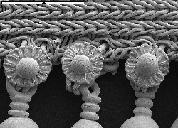

Scanning Electron Microscope
The
scanning electron microscope (SEM) allows us to see things at magnifications
hundrEds of times greater than the light microscope. It can focus on both the
"hills" and the "valleys" of an object at the same time, so that sharp images
of very fine details are produced. However, because the object is viewed in
a beam of electrons, rather than light, it appears in shades of grey, like a
black and white TV image. False colour can be provided electronically, to emphasise
features of interest.
Back